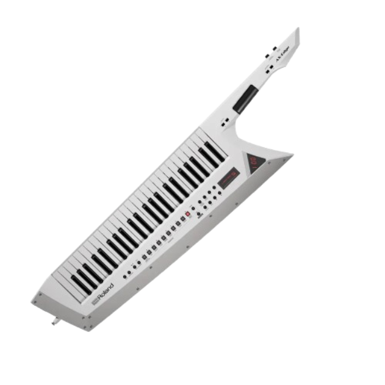

--Kavan Abayanayaka's Tech Innovations Blog--
5/11 - 5/15
We were done last week, so not much happened this week in regards to the project. I was gone from the class on Monday
for my AP Calc test and on Thursday to sign up for orientation at UCLA (it's competitive because orientation is where you
get to pick you classes; first come first serve).


I brought my Dirtywave M8 Tracker to do some beat mixing and Weston brought in his Keytar. All I did code wise was
adjust some final button threshold values and merged everything onto main. I also, finally, put together a proper Readme
file for the project repository: https://github.com/RHSTigerTech/ti-project-wamboard
So, as of writing this, the capstone presentation is tomorrow! Exciting. It also means I won't have to make any more blogs after that.
I think I'll still make one more, though.
Edit as of Graduation, May 29th 2026:
The capstone presentation went decently, and we just had a ton of fun playing board games for the last week of school.
I've brought the Wamboard home to work on it over the summer, my main goal being to add a built-in speaker so that
we don't need to hook it up to an amp or headphones to hear it.
My real final blog is the main page / Blog Menu for this page, which I'd guess you've already seen if you got to this page :)
Previous Blog -- Return to Blog Menu